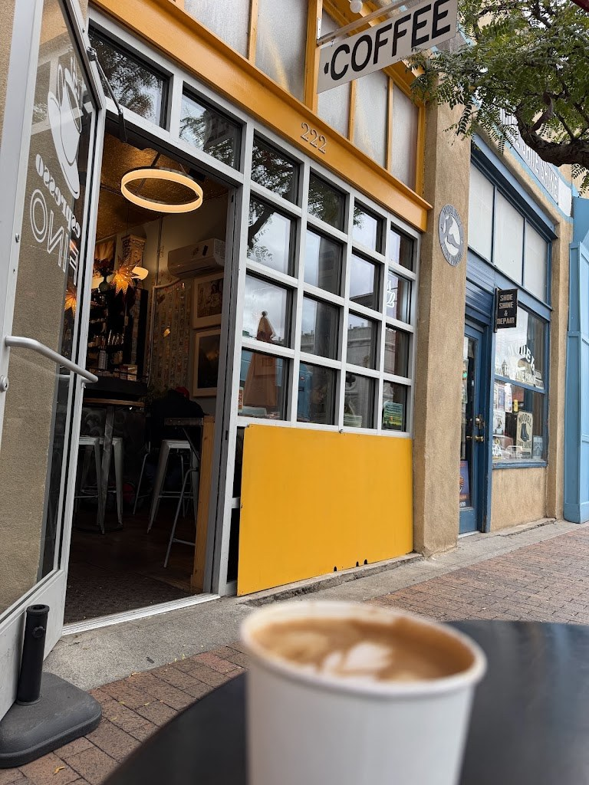
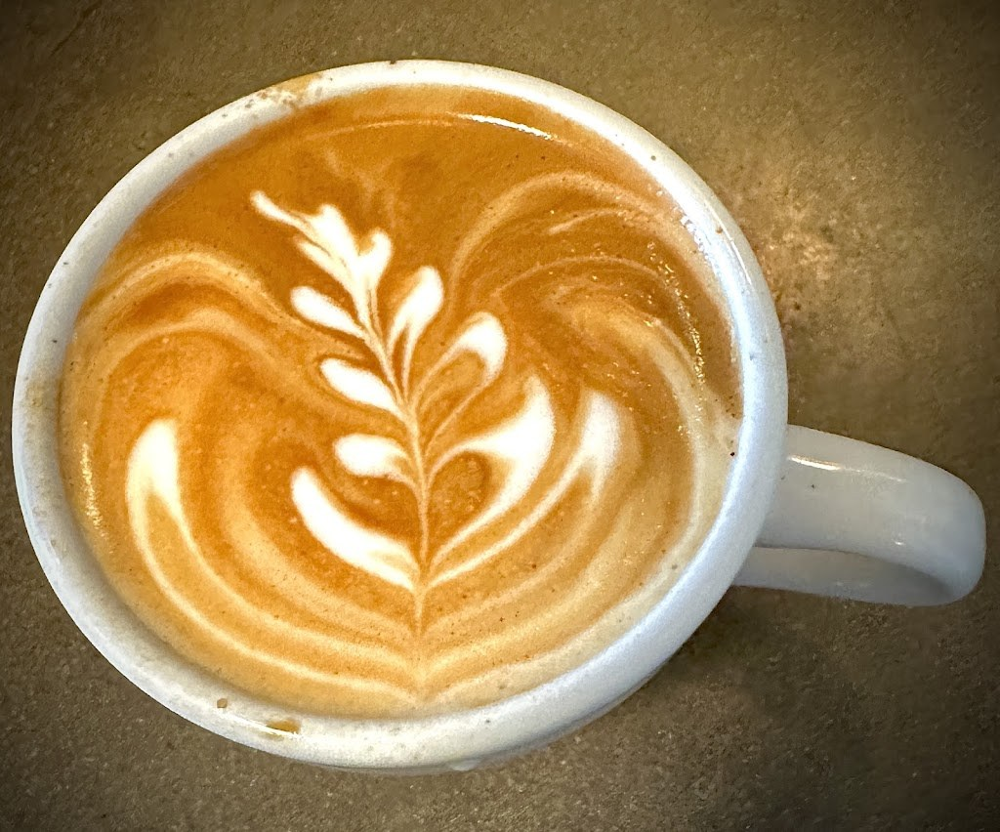

Visit Espresso Fino
A barista-owned modern espresso bar on Gold Avenue, downtown Albuquerque.
Address: 222 Gold Ave SW, Albuquerque, NM 87102
Hours: Mon to Fri 7am to 4pm, Sat and Sun 8am to 2:30pm
Phone: (575) 779-6078
Find us: 222 Gold Avenue SW, Albuquerque, NM 87102. Mon to Fri 7am to 4pm, Sat and Sun 8am to 2:30pm. Call (575) 779-6078.
Gallery


Photos of Espresso Fino: the patio, the storefront, and a latte.
Contact
Espresso Fino serves Albuquerque, NM. Questions? Call (575) 779-6078.